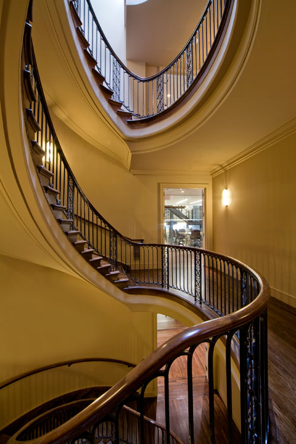

The Institute for the Study of the Ancient World at New York University, which was founded in 2006 with funding from the Leon Levy Foundation, is housed in a historic six-story limestone townhouse at 15 East 84th Street. Built in 1899 for Adam Lanfear Norrie, the house was extensively altered in 1928 and the present Italian Renaissance façade and interiors bear little resemblance to the original house. After its purchase by the Leon Levy Foundation in 2004, the house was transformed into a suite of offices, study rooms, galleries, and a library, with careful attention given to retaining as much of its original architectural detail as possible.
